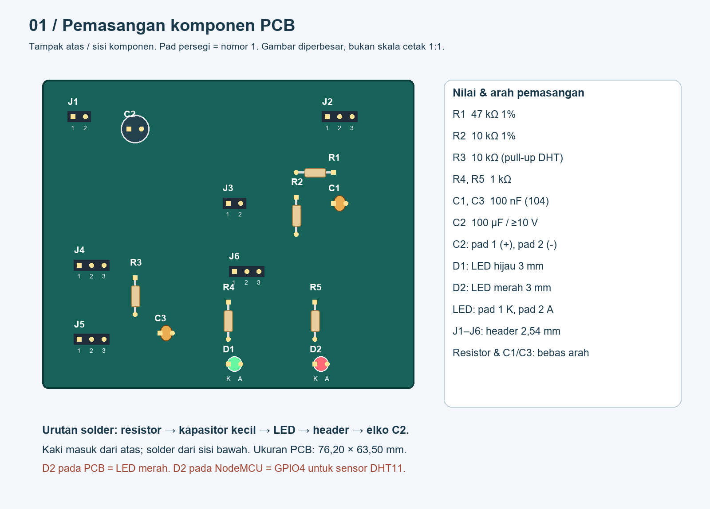
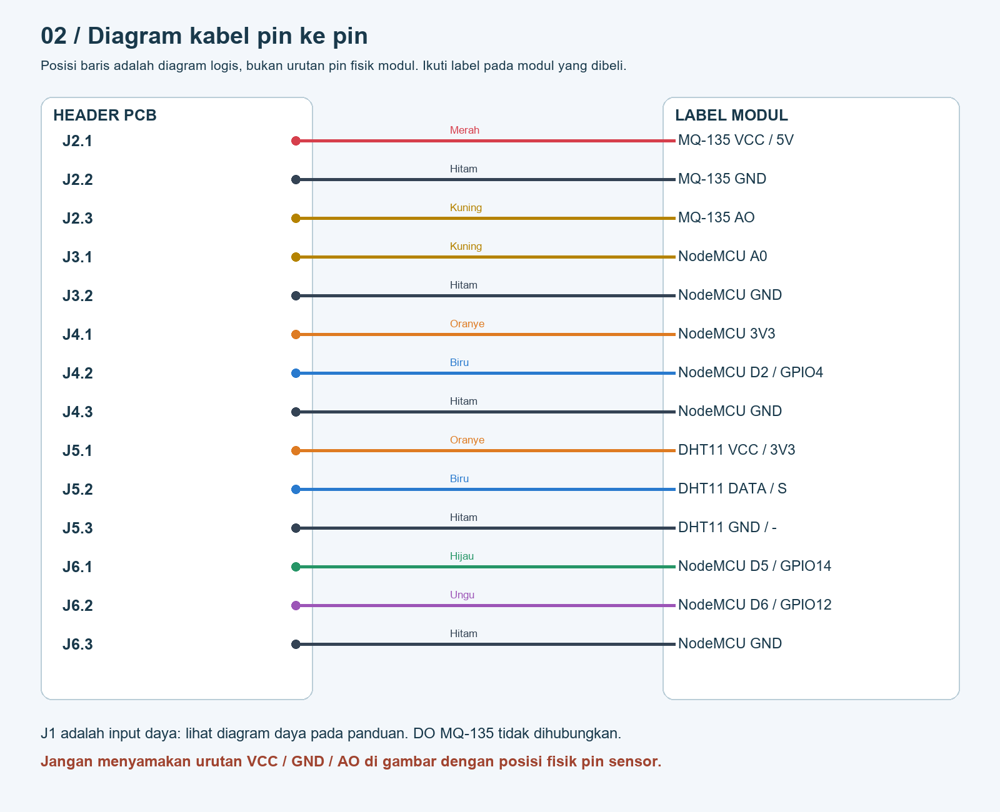
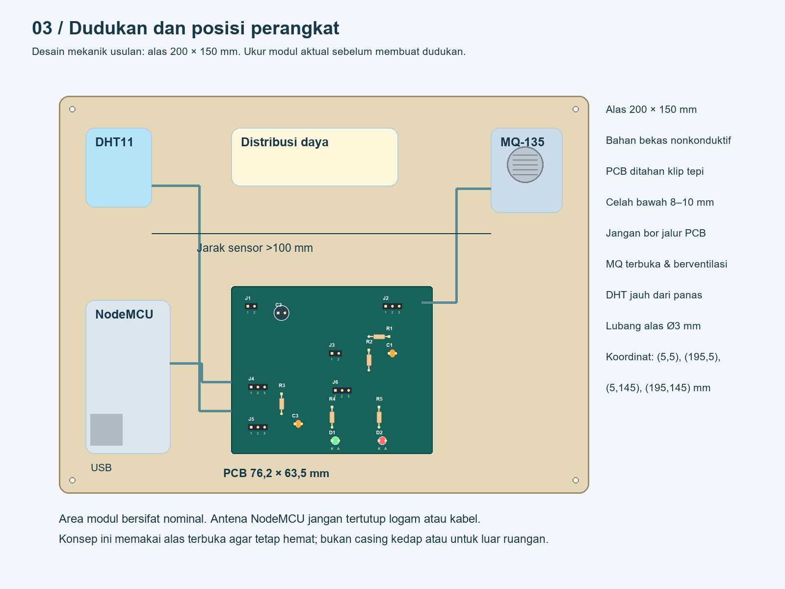
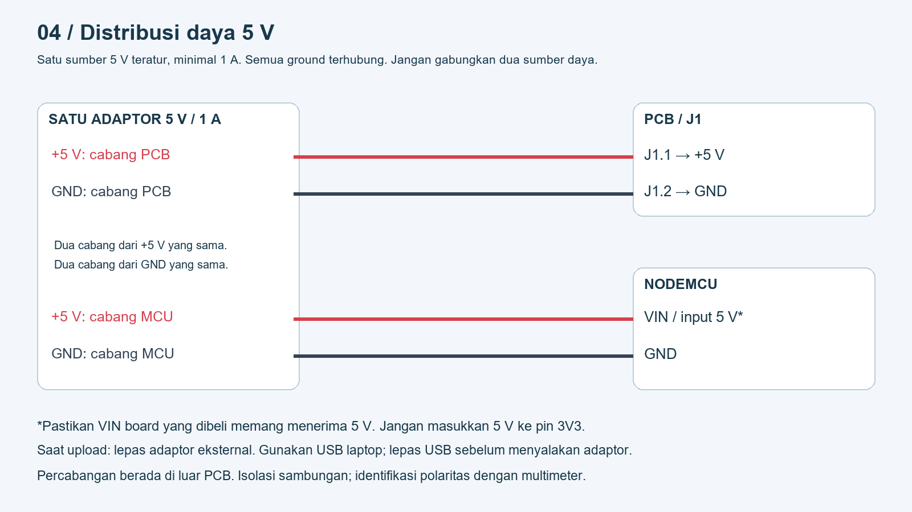

Panduan pemasangan hardware Rev A. PCB satu sisi, NodeMCU dan sensor menggunakan kabel.
Buka panduan PDF 7 halaman · Rencana dan anggaran · File PCB KiCad · Skema listrik
Ikuti label pin barang aktual. Belum diverifikasi di KiCad atau diuji fisik. Firmware belum termasuk.



